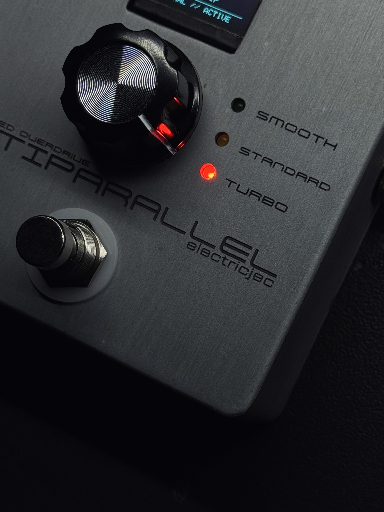

Analog signal path
Op-amp gain, diode clipping, tone shaping, and output control form the core audio path.
Audio · Analog electronics · Embedded systems
A custom overdrive pedal that keeps its guitar signal analog while adding digital awareness, visual feedback, and a custom hardware platform.

Overview
ANTIPARALLEL began as an analog overdrive project and evolved into a complete hardware product combining audio electronics, embedded sensing, PCB design, interface design, and enclosure integration.
The key design decision is separation: the signal processing remains analog, while digital electronics sit alongside it to monitor controls and present useful information.
That balance let the pedal keep the direct feel of traditional hardware while introducing a modern display and a more deliberate product-level interface.
Core architecture
The guitar signal stays in the analog domain while the embedded subsystem handles sensing, visual feedback, and interface behavior.
Op-amp gain, diode clipping, tone shaping, and output control form the core audio path.
Smooth, Standard, and Turbo change clipping behavior while preserving the same underlying analog architecture.
The display adds parameter awareness without replacing the immediate physical controls of a conventional pedal.

Embedded interface
Knob sensing and the OLED make the operating state visible while the user interaction stays immediate and tactile.
Suggested file: antiparallel-display.png
Gain, tone, volume, and clipping selection remain dedicated physical controls rather than menu parameters.
The display provides readable parameter feedback and operating-state information alongside the analog circuit.
PCB development
The electronics were translated into a PCB that brings the analog circuit, embedded subsystem, display connections, controls, and enclosure constraints together.


Placement and routing were developed around the physical control positions, signal path, connectors, and enclosure geometry.
The finished design was prepared for professional board fabrication, followed by assembly and system-level testing.
Development
Prove the overdrive, clipping, tone, and output stages before committing to the final hardware.
Add sensing and display behavior around the analog circuit without changing the core audio path.
Convert the prototype into a board designed around the enclosure and real control placement.
Integrate the board, OLED, knobs, mode control, LEDs, jacks, and footswitch into the finished enclosure.
Refine the relationship between physical knob positions and displayed parameter values.
Gallery plan
These slots show exactly which additional images will add the most value without overcrowding the case study.
Suggested file: antiparallel-breadboard.png
Suggested file: antiparallel-internal.png
Suggested file: antiparallel-top.png
Suggested file: antiparallel-detail.png
What I learned
The project made the interactions between electronics, firmware, mechanical constraints, calibration, and usability much more concrete.
It pushed the work beyond circuit prototyping and toward thinking about the entire physical product as one system.